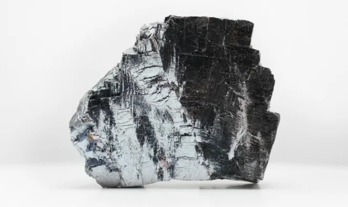
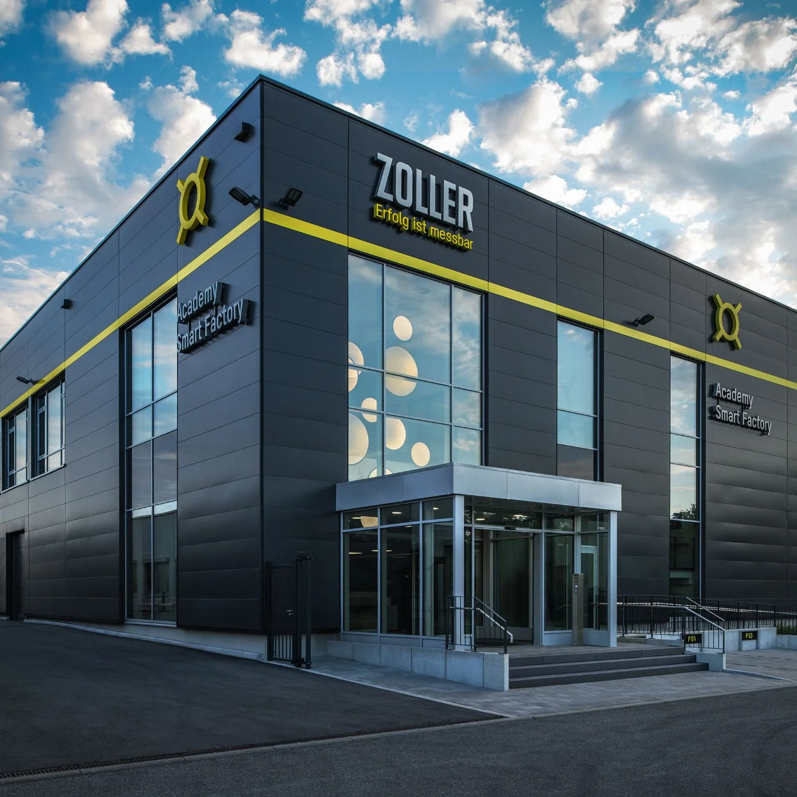

텅스텐 가격 급등에 대처하는 방법
전경질금속 공구의 극심한 가격 상승에 대처하기 위한 두 가지 전략은 다음과 같습니다. 공구 사용 효율을 높이고, 재연마 공정에서 최고의 정밀도를 확보하는 것입니다.
계속 읽기
ZOLLER의 기술 솔루션 으로 공구 프로세스 의 효율 을 높이세요. 기술을 선도하는 ZOLLER가 더 빠르고 정밀한 생산 환경 을 지원합니다.
ZOLLER의 기술 솔루션 으로.
ZOLLER는 공구 프로세스 전반에서
높은 효율 개선 효과를 제공합니다.
그렇기 때문에
ZOLLER에 대한 투자로
빠른 투자 효과를 누릴 수 있습니다.
CNC 장비 한 대만 사용하더라도
ZOLLER 솔루션은 시간과 비용,
장비 비가동 시간을 효과적으로 줄여줍니다.
ZOLLER에게 프리미엄은
특권이 아니라 약속입니다.

생산성 향상, 리드타임 단축, 비용 절감까지, 졸러(ZOLLER)는 전 세계 제조 현장의 효율성과 경쟁력 향상에 기여하고 있습니다.
졸러(ZOLLER) ‘hyperion’을 도입한
‘SycoTec’은 세팅 시간을 33% 단축했습니다.
수평형 공구 프리세팅 및 측정 장비
‘hyperion’은 선삭 공구와 멀티 툴 홀더를
고정밀로 측정하여, 초고속 초소형 모터 생산 공정의
생산성과 품질 향상에 기여하고 있습니다.
공구 세팅 및 측정 장비 'Smile' 의 평균 투자 회수
기간입니다.
기준: CNC 장비 1대 기준, 1교대 생산 환경 적용 시
※ 장비 2대 운영 시 회수 기간은
약 절반까지도 단축 시킬 수 있습니다.
미국 미시간 주의 가족 경영 기업 ProCam은
'Smile 420' 도입 이후 2년 만에
약 100만 달러의 추가 매출을 달성했습니다.
작업 준비 시간 단축과 장비 가동 효율 향상을
통해 생산성을 높이고 더 많은 주문에
대응할 수 있게 되었습니다.
스크롤하면 카메라가 3D 제품 월드의 모든 테마 구역을 날아갑니다.
셋업 시간을 40% 이상 단축하세요.
12 개 제품
프로세스를 연결하고 품질을 보장하며 더 빠르게 생산합니다.
20 개 제품
품질을 기록하고 디지털 트윈을 생성하세요.
15 개 제품
절삭 공구를 위한 유연한 모듈식 자동화.
8 개 제품

졸러(ZOLLER) 공구 측정·프리세팅 장비를 통한 생산성 향상
졸러(ZOLLER) ROI 계산기를 통해 비용 절감 효과를 확인해 보십시오.

오버른도르프 소재 Mauth Werkzeug-Schleiftechnik의 대표 , Michael Mauth 마이클 마우트국제 시장에서 경쟁력을 갖추기 위해서, 자동화는 필수적입니다.

프랭크 셰퍼(Frank Schaefer) 공학사, 듐멘 소재 LIDU Maschinenbau Lienenbrügger GmbH 경영진졸러(ZOLLER)의 소프트웨어 시스템을 통한 디지털화는 생산 효율 향상에 핵심적인 역할을 했습니다.
플라이델스하임에 위치한 ZOLLER 스마트 팩토리에서는 완전한 생산 현장 자동화에 이르기까지 모든 솔루션을 갖춘 ZOLLER 시스템을 선보입니다. CAM에서 부품 생산에 이르는 완벽한 공정의 높은 효율성과, 지속적으로 이용 가능한 공구 데이터가 제공하는 이점을 직접 확인해 보시기 바랍니다.
방문 일정이나 1:1 전문가 상담을 예약하는 방법에 대해 지금 바로 자세히 알아보세요.

»powerShrink«는 공구를 기록적인 속도로 수축시키면서도 에너지를 극히 효율적으로 사용합니다. 수축 척은 부드럽게 가열 및 냉각되어 수축 공정의 효율을 극대화합니다.